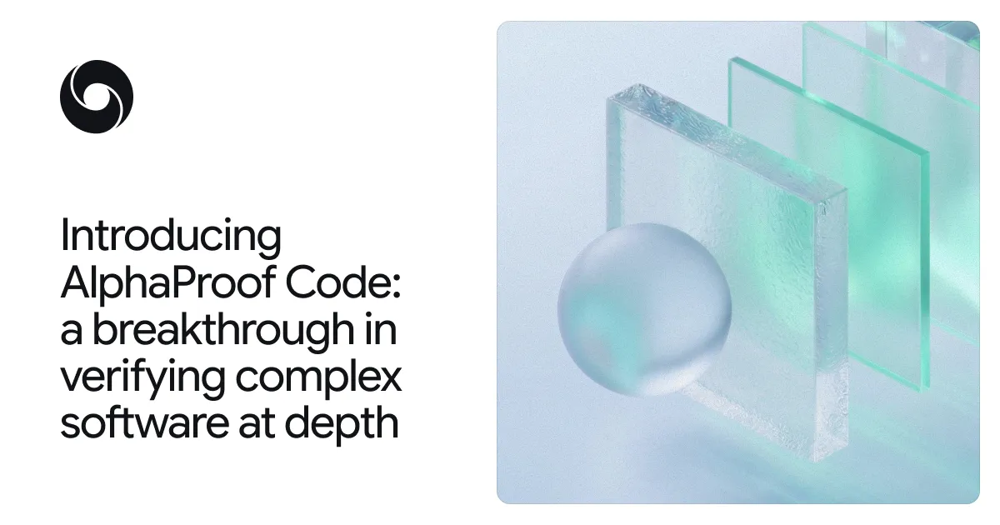
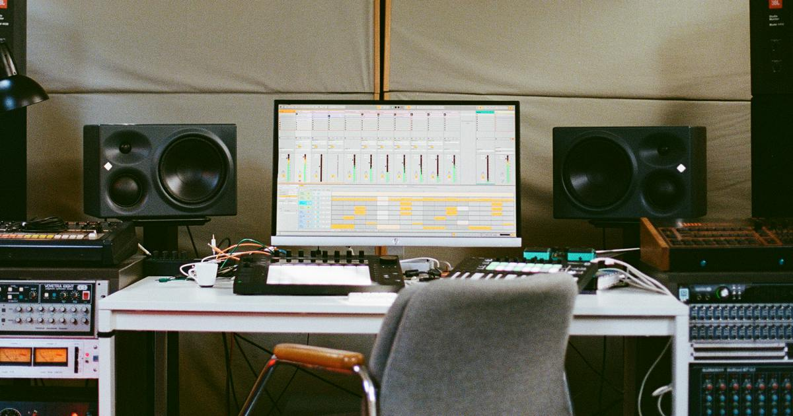

The front page, read closely and set in type — a briefing for Keegan
Compiled from news.ycombinator.comNovember 10, 2026Front Page Briefing
.nameVerisign reverses a planned termination of existing domains and redirects.
SecurityDeepMind reports proofs of specified Signal cryptographic properties.
ToolsVal Town sets dates for its service wind-down.
CultureAbleton says Live 13 is coming in early 2027.
Field Desk
Verisign reverses plan to end existing .name domains
Registrations already in use and email redirects will remain, Neil Fraser reports.
Field Desk★ 555 pts · 118 comments
BALI — After an advocate traveled to Bali to make the case to ICANN, Verisign reversed its plan to terminate 22,000 third-level .name domains and email redirects, according to site owner Neil Fraser. Existing domains and redirects will remain indefinitely, he writes; new third-level registrations will close.[1]
Fraser credits a group of domain holders, lawyers and supporters who filed reconsideration requests and letters. In the Hacker News discussion, a reader pointed to an earlier thread about the proposed termination; another said they had held a .name domain for almost a decade without knowing its history.[2]
Hardware Desk
A smart home designed to keep working offline
Hardware Desk★ 541 pts · 190 comments
Image accompanying the source article. docodethatmatters.com
A home-automation builder describes a system whose core functions do not depend on vendor servers: Tasmota devices, an MQTT broker and Node-RED running on a Raspberry Pi. The author says a broken Nest API helped shape the rule that lights and other essentials must work without internet service.[3]
Alexa and some cloud services remain optional interfaces; wall switches and a dashboard still work when they are down. On Hacker News, the author said the setup reflects ten years of rules and asked readers for examples of unnecessary internet dependencies.[4]
Security Desk
DeepMind reports formal verification of Signal cryptographic code
Security Desk★ 535 pts · 169 comments

Image accompanying the source article. deepmind.google
Google DeepMind says its AlphaProof Code system used human-reviewed specifications and AI agents to formally verify key security properties of Signal’s core cryptographic implementation. The team says the work took four weeks and generated more than six million lines of Lean proof code.[5]
The researchers say they reintroduced two previously fixed bugs into an isolated version and obtained proofs that the buggy versions were insecure. A reader praised the Signal engineers; the company’s claim concerns specified properties of the protocol implementation, rather than a guarantee that every component of Signal is flawless.[6]
Tools Desk
Blender 5.3 adds native Gaussian splat support
Tools Desk★ 367 pts · 52 comments
Image accompanying the source article. www.blender.org
Blender 5.3 can import 3D Gaussian splats from PLY, SPZ and glTF files, store them as point clouds and render them in EEVEE, Cycles or Workbench. The technique reconstructs scenes from photographs or video using many soft, transparent elements.[7]
The release notes say performance is still being optimized and color-space differences can cause rendering inaccuracies. One HN reader highlighted the separate addition of bundle support in geometry nodes for complex workflows.[8]
AI Desk
Developer warns AI-generated code can become fragile
AI Desk★ 288 pts · 354 comments
A developer who says he generated at least 90% of his code with AI during his final months at Meta argues that heavy reliance on coding agents can leave shallow tests, unnecessary abstractions and gaps in human understanding. He says the output did not double his own coding rate.[9]
The author attributes rising incidents and slower mitigation to these weaknesses, but presents observations rather than a controlled causal measurement. A commenter disagreed that fragility is inevitable, arguing that good patterns and oversight can produce robust code.[10]
Culture Desk
Ableton announces Live 13 for early 2027
Culture Desk★ 236 pts · 255 comments

Image accompanying the source article. www.ableton.com
Ableton says Live 13 is due in early 2027, with a built-in step sequencer, ARA 2 support for compatible audio editors, Capture Automation and a Drum Synth with more than 20 engines. The company is offering a free upgrade to the corresponding Live 13 edition to buyers of Live 12 during its announcement offer.[11]
The Intro edition is limited to 16 tracks and scenes; Suite adds Melodyne essential and other effects. A daily user in the HN discussion singled out Capture Automation, the sequencer and multiband rack types.[12]
Security & Practical
Security Desk
Synaptics patent claims halt work on DisplayLink drivers
Security Desk★ 206 pts · 89 comments
LWN reports that Synaptics patent claims have stopped work on DisplayLink drivers. The article body was subscriber-only when fetched, so details beyond its headline could not be independently checked from that page.[15]
In the HN thread, one reader linked a cease-and-desist notice and quoted a claim that the work risked tens of millions of dollars in annual corporate revenue. Another disputed the strength of a particular patent; that is a commenter’s assessment, not a court finding.[16]
Security Desk
A guide replaces ordinary SSH keys with hardware-backed credentials
Security Desk★ 197 pts · 92 comments
A security practitioner documents moving SSH authentication to YubiKey, TPM and Apple Secure Enclave-backed credentials. A YubiKey can hold an ed25519-sk credential, while OpenSSH keeps a handle on disk; by default the user must touch the device to authenticate.[19]
The TPM method differs: encrypted private-key material remains on disk and the TPM decrypts it. The author cautions that unattended, no-touch or PIN-free configurations trade away a user-presence check. One reader asked about using a YubiKey across a jump host, a case the post does not address.[20]
Tools Desk
Val Town will wind down its cloud service
Tools Desk★ 235 pts · 58 comments
Val Town is winding down after saying it could not compete in cloud computing. In a November 10 notice, founder Steve Krouse says billing is paused, existing subscriptions will be serviced free and annual prepayments will receive partial refunds.[13]
New signups and upgrades end November 10; read-only mode begins December 10, excluding SQLite and blob storage; other services end January 10, 2027. The company lists February 1, 2027 for open-sourcing Val Town. A reader asked whether the service would be open sourced.[14]
Tools Desk
.NET 11 raises the x86 hardware baseline
Tools Desk★ 205 pts · 145 comments
Microsoft’s .NET 11 runtime notes, updated for release candidate 2, raise the x86 and x64 minimum from x86-64-v1 to v2 on Windows, Linux and Apple systems. The change adds requirements including SSE4.1, SSE4.2 and POPCNT; the documentation says older machines will no longer run .NET 11.[17]
Linux Arm64’s minimum remains unchanged, although its ReadyToRun target adds LSE and can incur extra just-in-time compilation on older hardware. Runtime-native async is a preview feature; one HN reader welcomed the more legible live stack traces.[18]
“Rule one: if the internet goes down, my lights still turn on.”[3]Home-automation author
Front Page Box Score
Stories are ranked by snapshot points; the dagger marks the most-discussed of these ten.
Front Page Ledger
Fresh stories
10
Follow-ups
0
Carried in digest
0
Wire stories
0
Combined points
3,365
Combined comments
1,522
The day in one line
Domain holders won a reprieve, while a cloud platform set its shutdown timetable.
Corrections & Clarifications
Signal proof. DeepMind verified specified properties of core cryptographic code, not every security property of the entire app.[5]
Live 13. Announced now, it is scheduled for early 2027; it is not yet generally released.[11]
SSH keys. The TPM approach still stores encrypted private-key material on disk, even though the key is hardware-bound.[19]
AI code. The author attributes incidents to AI-generated code, but the article offers workplace observations, not a controlled study establishing causation.[9]
Publisher’s Note
Existing .name domains lead this edition. All ten stories are fresh against the previous four editions; no follow-up or digest was needed. The LWN article was subscriber-only in our fetch, so that report relies on its headline and the discussion.
Methodology: Hacker News front-page candidates were captured November 10, 2026 at 22:00 UTC through the Algolia API; scores and comment counts are the snapshot values, not live totals. The ten highest-scoring fresh stories were selected after comparison with the previous four editions. Articles and threads were fetched for context.